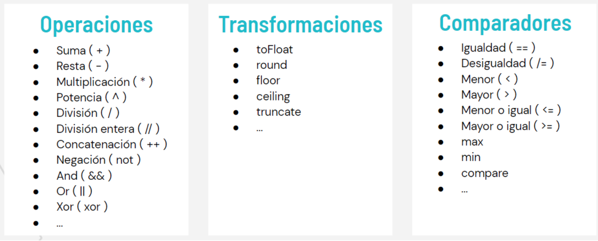

Caracteristicas Importantes
El lenguaje ELM es un lenguaje cliente de web puramente funcional, fuertemente tipado, reactivo y basado en eventos ¿pero que queremos decir con esto?
- Lenguaje puramente funcional: En ELM practicamente todo es una función, los nombres se tratan como funciones, el valor de union de tipos es una funcion, y cada función esta compuesta por funciones parciales aplicadas a sus argumentos, hasta los operadores (+) o (-) son tratados como funciones.
- Fuertemente tipado: En ELM los tipos son genericos a menos que se espicifique lo contrario, aun así el lenguaje ELM no permite operaciones en los tipos incorrectos, es por eso que se recomienda siempre especificar los tipos.
- Lenguaje cliente de web: ELM compila a javascript, es por eso que los buscadores pueden ejecutar este lenguaje en paginas web, de hecho su mayor uso se encuentra en esa area.
- Reactivo: En ELM cualquier cambio ejecutado en los modelos es renderizado automaticamente en la vista, sin una manipulación explicita del DOM.
- Basado en eventos: La base de ELM son los eventos, cada evento en ELM se agrupan en conjuntos discretos de mensajes, definidos en un tipo de mensaje. Existen tres fuentes de eventos que pueden producir mensajes: Las acciones de los usuarios en la vista HTML, La ejecución de comandos, Eventos a los cuales se subscriben.
Arquitectura ELM
La arquitectura ELM es un patrón para la creación de programas interactivos. El patrón básico de la arquitectura se ve de la siguiente manera:

El programa elm produce HTML para renderizar en pantalla, y luego el computador enviá un mensaje acerca de lo que esta sucediendo, es decir se crea una via de comunicación bidireccional que garantiza reactividad en cada programa creado por ELM. De esta forma la arquitectura básica de un programa ELM se divide en tres partes:
- Modelo: Representa el estado del programa.
- Vista: La forma de transformar el estado en HTML.
- Actualización: una forma de actualizar el estado basado en el mensaje.
Conceptos Exóticos
Tipos de uniones
Este concepto es la piedra preciosa detrás de ELM. Veamos este concepto con un ejemplo:
Imagine que usted esta creando una paginación para una lista. Al final de la pagina debe existir botones para devolverse, ir hacia adelante, e ir a cualquier pagina por su número, pero el problema es como mantener la información de cual link fue oprimido de una forma elegante. Podríamos utilizar múltiples callbacks para cada caso, o complicarnos con valores booleanos que indiquen en que tipo de acción nos encontramos, pero en ELM las cosas se hacen de una forma mas elegante. En ELM definiremos el siguiente tipo de union
y lo utilizamos como un parámetro en el envió de mensaje de la siguiente manera:
Finalmente en la función de actualización discriminamos cada caso de la siguiente forma:
Creando múltiples mapeos de funciones con <|
Veamos este concepto por medio de un ejemplo: suponga que una lista tiene map, map2,...,map5. Pero ¿que sucede si tenemos una función que toma seis argumentos? No existe ningún map6. Pero, existe una técnica para solucionar esto. Usar la función <| como parámetro, y funciones parciales, con algunos de los argumentos aplicados como resultados parciales.
Por simplicidad, suponga que la lista solo tiene map y map2, y queremos aplicar una función que toma tres argumentos.
Suponga que queremos usar foo, que solo multiplica los argumentos numéricos, definido como:
Así, el resultado de map3 foo [1,2,3,4,5] [1,2,3,4,5] [1,2,3,4,5] es [1,8,27,64,125].
De esta forma reconstruyamos lo que esta pasando en la parte anterior. Primero, en partialResult = List.map2 foo list1 list2, foo se aplica parcialmente a toda pareja list1 y list2. El resultado es [foo 1 1, foo 2 2, foo 3 3, foo 4 4, foo 5 5], una lista de funciones que toma un parámetro y retorna un numero, el cual es después llamado en List.map2 (<|) partialResult list3.
CÓDIGO ELM
Operadores, transformaciones y comparadores
Al igual que otros lenguajes, Elm soporta una gran variedad de operaciones entre valores, transformaciones de tipo y comparadores de expresiones. La siguiente tabla muestra algunos de los más representativos.
El núcleo del lenguaje
Es importante conocer ciertas estructuras que son útiles al momento de realizar código en Elm:
Values:
Pueden ser entendidos como literales, por ejemplo números enteros o cadenas definidas en el código.
Funciones:
Son las estructuras más importantes en el lenguaje, su estructura puede parecer extraña inicialmente debido a que difiere de otros lenguajes, sin embargo el concepto es exactamente el mismo. Declaración de la función “greet” que recibe el argumento “name”
Declaración de la función “sum” que recibe dos argumentos “a” y “b”
Condicionales:
La estructura de un condicional en Elm es muy similar a otros lenguajes como python. En el siguiente ejemplo se construye la función “greet” que recibe el parámetro “name”, y en el cuerpo de la función se hace un condicional para que varíe el output en función del valor de “name”.
Listas:
La declaración de las listas en Elm es equivalente a la declaración de una lista en lenguajes como python o javascript, con la diferencia de que en Elm todos los elementos de la lista deben ser del mismo tipo.
Tuplas:
Las tuplas se utilizan principalmente cuando se requiere retornar varios valores en una misma función, tal vez de distinto tipo. Únicamente pueden tener dos o tres valores.
Records:
El concepto de un registro o record en Elm es muy similar al de un objeto en Javascript o un diccionario en Python. Se refiere a un elemento que posee varios atributos con sus respectivos valores.
La forma de acceder a sus atributos es muy común en otros lenguajes
Cuando se quiere reescribir uno de sus atributos, en Elm se crea una copia completa del objeto variando únicamente los campos que le especificamos. Esto con el objetivo de que no se afecten las salidas de otras funciones que dependan del record inicial. En la siguiente línea de código se modifica la edad del record chloe para que sea 2 en lugar de 1.
Tipos:
Uno de los puntos más fuertes de Elm es que tenemos control total sobre los tipos de dato que hay en las funciones, tanto como en su entrada como en su salida. Sin embargo, a veces puede ser más útil definir nuestros propios tipos aparte de los nativos, para esto Elm nos da ciertas herramientas:
- Type alias: Es muy útil para definir tipos que serán usados en funciones como parámetro o como salida. Es un concepto similar a la creación del modelo de un objeto, por lo que se debe especificar los tipos de los atributos que posea
> type alias Gato = | { edad = Int, | nombre = String }
- Custom types: Esta herramienta nos permite crear tipos personalizados de forma sencilla, estos pueden ser usados incluso como tipos de un Type alias.
> type Raza = Criollo | Persa
Case y wildcard:
Imaginemos que tenemos un type alias “Gato” que tiene como atributos “raza” de tipo “Raza” (definido en el último fragmento de código) y de un nombre tipo cadena.
La siguiente función identifica si un gato es de Raza Criollo o de Raza Persa
La estructura case sirve para tomar decisiones en base a la estructura de los datos de “gato”, sin embargo también sirve para tomar decisiones en base a valores, como lo sería una estructura switch-case existente en otros lenguajes. El carácter “_” sirve como comodín, indica que lo que sea que vaya en esa posición realmente no va a ser significativo en el flujo de la función, a esto se le conoce como wildcard.
Maybe
Un tipo Maybe sirve para indicar que un valor puede que no sea conocido.
Por ejemplo, continuando con el ejemplo del type alias “Gato”, la siguiente definición significa que tal vez no se conozca la edad del gato, es importante haber definido ya el tipo Maybe.
Y ya instanciando dos elementos Gato, el primero con edad desconocida y el segundo con edad conocida
Este concepto es bastante útil al definir atributos opcionales en records o cuando se requiere que una función no procese ciertos valores (por ejemplo, cuando se intenta hacer un parseo de String a Int pero el valor de la cadena no tiene representación entera)
Pipelines:
Tenemos dos funciones
Implementamos una función que las use para transformar un número entero
Elm además nos provee de una herramienta llamada Pipelines para que los múltiples llamados a funciones sean más legibles para el programador, así entonces el último bloque de código quedaría de la siguiente forma
PROGRAMACIÓN FUNCIONAL
¿Y los ciclos?
Elm no provee una implementación de ciclos de forma nativa. Si se requiere usar un ciclo en Elm, entonces se le pide al programador que haga uso de herramientas como la recursión. Así, entonces un ciclo construido de la siguiente forma en Javascript
En Elm podría ser implementado de la siguiente forma
El primer bloque almacena en la variable “saludo” el valor
“hola:5 hola:4 hola:3 hola:2 hola:1”
Este valor también es el resultante de llamar a la función “saludar” del segundo bloque utilizando el parámetro 5.
Funciones de primera clase
Elm tiene soporte para funciones de primera clase, esto significa que las funciones pueden ser asignadas a variables o ser usadas como atributos o valores de retorno en otras funciones. En el siguiente ejemplo se asigna a una variable una función
Funciones de orden superior
Son funciones que pueden tomar otras funciones como parámetros o retornar otras funciones. Esto es bastante evidente al saber que Elm realmente solo admite funciones que tienen un argumento, el lenguaje se encarga de hacer la conversión de una función que tiene varios parámetros a una lista de “curried functions”, donde cada una de las funciones retorna a su vez una función. Para ilustrar el concepto, veamos un ejemplo de implementación de una función que suma dos valores “a” y “b” en Elm y la respectiva conversión que se hace “por debajo” a “curried functions”. A continuación la implementación en Elm
La función “sum” es transformada de la siguiente forma. (Para hacer más entendible el código, se hizo la conversión equivalente en Javascript) La función sumar
Es transformada en “curried functions”, una lista de funciones anidadas que a su vez retornan funciones. Cada una de estas funciones son funciones de orden superior.
Funciones lambda
Son cierto tipo especial de funciones que son usados en alguno de los siguientes escenarios:
- Se quiere usar sólo una vez
- La función es demasiado simple
- Se requiere legibilidad (se definen sólamente cuando se necesitan)
- Se necesita retornar una función desde una función
Por ejemplo, la siguiente función lambda es equivalente a una función que calcula el cuadrado de un número
Y la siguiente función retorna una función lambda